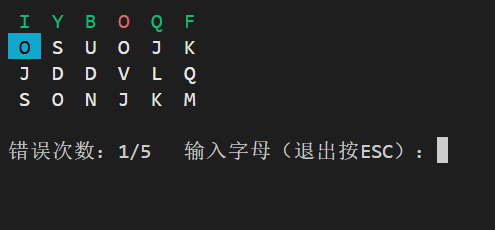

游戏简介
这款打字小游戏会在终端中生成一个 4x6 的随机字母矩阵，你需要按照行优先的顺序依次输入正确的字母。每输入正确一个格子就会变成绿色，错误则变成红色并累积错误次数。当错误次数达到上限（默认 5 次）时游戏失败；全部正确输入后游戏胜利。
核心特性：
- 随机生成大写字母矩阵
- 彩色高亮显示当前输入位置（青色背景）、正确输入（绿色）、错误输入（红色）
- 实时错误计数，支持中途按
ESC退出 - 跨平台支持 Windows / Linux / macOS
代码结构解析
跨平台无缓冲输入
为了实现“按下一个键立即响应而不需要回车”，代码分别处理了 Windows 和 Unix-like 系统：
#ifdef _WIN32
#include<conio.h>
#define GETCH _getch
#else
// 使用 termios 关闭规范输入和回显
int GETCH() { ... }
#endif启用 Windows 终端 ANSI 色彩
Windows 10+ 的默认控制台支持 ANSI 转义序列，但需要手动启用。代码中定义了 enableAnsi() 函数：
void enableAnsi(){
HANDLE hOut = GetStdHandle(STD_OUTPUT_HANDLE);
DWORD dwMode = 0;
GetConsoleMode(hOut, &dwMode);
dwMode |= ENABLE_VIRTUAL_TERMINAL_PROCESSING;
SetConsoleMode(hOut, dwMode);
}这样在 Windows 下也能使用 \033[32m 这类颜色控制码。
游戏数据结构
字母矩阵：
vector<vector<char>> letters(ROWS, vector<char>(COLS))
每个位置存储一个随机大写字母（'A' + dis(engine)）。状态矩阵：
vector<vector<int>> status(ROWS, vector<int>(COLS, 0))
0 = 未输入，1 = 正确，-1 = 错误。当前指针：
int currentRow, currentCol表示下一个要输入的格子。
const int ROWS=4;
const int COLS=6;
const int MAX_ERRORS=5;
int main(){
#ifdef _WIN32
SetConsoleOutputCP(CP_UTF8);
SetConsoleCP(CP_UTF8);
#endif
enableAnsi();//开启ANSI转义码
//用时间生成随机字母
auto seed = std::chrono::steady_clock::now().time_since_epoch().count();
std::mt19937 engine(seed);
std::uniform_int_distribution<> dis(0, 25);
//一个vector，每一个元素是另一个vector<char>，外层是行，内层是列
//std::vector<char>(COLS)一个临时内层vector，作为每一行的初始值
//临时对象本身是 vector<char>(COLS)，表示它创建一个大小为 COLS 的 vector<char>，即每一行有 COLS 个字符。
std::vector<std::vector<char>> letters(ROWS, std::vector<char>(COLS));
for(int r=0;r<ROWS;++r)
for(int c=0;c<COLS;++c)
letters[r][c]='A'+dis(engine);
//记录每个位置的判定结果，0=为输入，1=正确，-1=错误
std::vector<std::vector<int>>status(ROWS,std::vector<int>(COLS,0));
int currentRow=0,currentCol=0; //当前待输入位置
int error=0; //错误次数
bool gameOver=false;
bool victory=false;游戏主循环
- 清屏并重新绘制整个界面（使用 ANSI 码
\033[2J\033[H）。 - 根据
status和当前光标位置设定不同颜色：- 当前格子 → 青色背景、黑色文字
- 正确格子 → 绿色文字
- 错误格子 → 红色文字
- 未输入格子 → 白色文字
- 等待用户按键：
ESC→ 退出游戏- 其他字母 → 与
letters[currentRow][currentCol]比较
- 判断正确/错误，更新状态、错误计数，并移动光标。
- 当错误次数 ≥
MAX_ERRORS或所有格子输入完毕时，结束主循环。
while (!gameOver)
{
//清屏并定位到左上角
std::cout<<"\033[2J\033[H";
//绘制矩阵
for(int r=0;r<ROWS;r++){
for(int c=0;c<COLS;c++){
if(r==currentRow&&c==currentCol){
std::cout<<"\033[46m\033[30m";
}
else if(status[r][c]==1){
std::cout<<"\033[32m";//正确输入绿色
}
else if(status[r][c]==-1){
std::cout<<"\033[31m";//错误输入红色
}
else{
std::cout<<"\033[37m";//带输入白色
}
std::cout<<' '<<letters[r][c]<<' ';
std::cout<<"\033[0m";
}
std::cout<<'\n';
}
//显示错误计数和提示
std::cout<<"\n错误次数："<<error<<"/"<<MAX_ERRORS
<<"\t输入字母（退出按ESC）：";
//读取一个键
int ch=GETCH();
if(ch==27){
gameOver=true;
break;
}
//转成大写
char inputChar=static_cast<char>(std::toupper(ch));
if(inputChar==letters[currentRow][currentCol]){
status[currentRow][currentCol]=1;
}else{
status[currentRow][currentCol]=-1;
++error;
if(error>=MAX_ERRORS){
gameOver=true;
victory=false;
break;
}
}
//移动到下一个格子（行优先）
++currentCol;
if(currentCol>=COLS){
currentCol=0;
++currentRow;
if(currentRow>=ROWS){
//全部输入完毕
gameOver=true;
victory=true;
}
}
}结束画面
- 胜利时显示绿色祝贺信息，并附带“🎉恭喜喵”。
- 失败时显示红色错误信息，指出超出错误次数。
- 普通退出则显示提示。
最后调用 GETCH() 等待任意键退出，避免控制台窗口一闪而过。
std::cout<<"\033[2J\033[H";//清屏
if(victory){
std::cout<<"\033[32m🎉恭喜喵\033[0m\n";
}else if(error>=MAX_ERRORS){
std::cout<<"\033[31m💥错误达到"<<MAX_ERRORS<<",失败了喵\033[0m\n";
}
else{
std::cout<<"游戏已退出。\n";
}
//等待按键再退出
std::cout<<"\n按任意键退出……";
GETCH();
return 0;效果展示
在终端输入
g++ typing_game.cpp -o typing_game.exe
.\typing_game.exe
扩展与改进
还在开发中……之后会作出一个GUI，然后再丰富玩法……